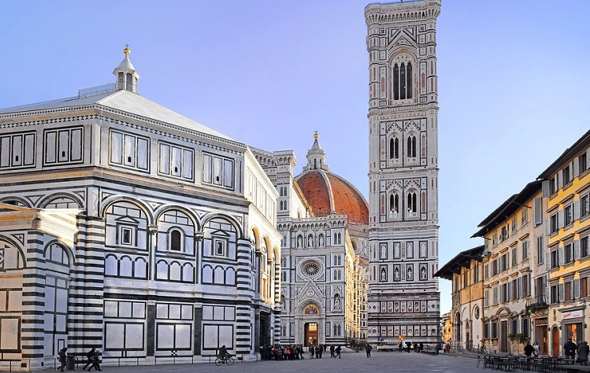
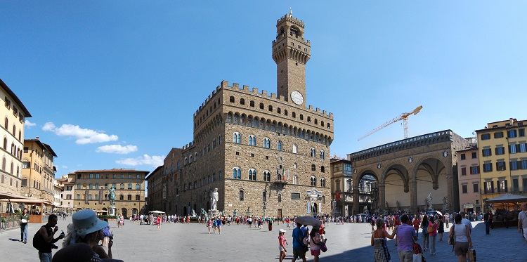
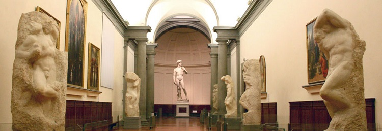
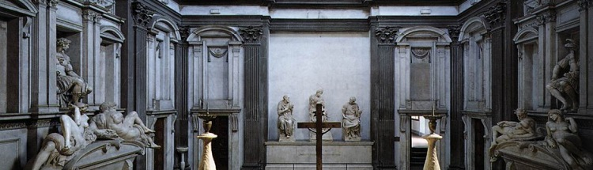
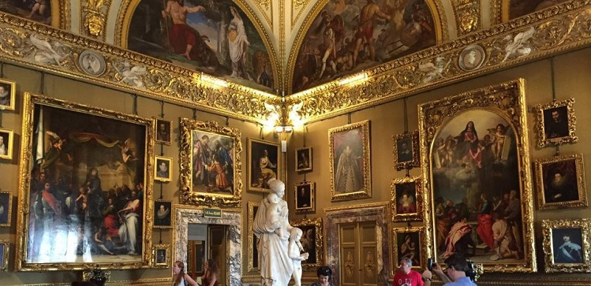
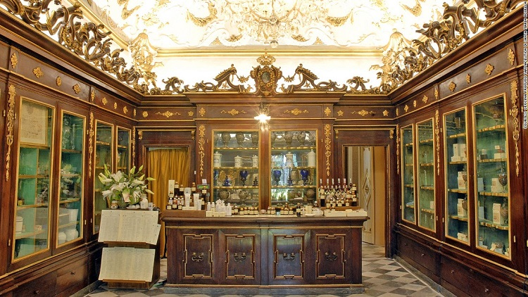

Explore Florence's neighborhoods and plan your daily itineraries
Piazza del Duomo Area—Full Day
This is the heart of Florence and one of the most visited places in Europe and the world. The Piazza del Duomo surrounds Florence's central cathedral, Santa Maria del Fiore. The cathedral, Giotto's campanile, and the Baptisery are part of the UNESCO World Heritage Site that covers the historic center of Florence. Plan this itinerary
Main Sites of the Piazza del Duomo Area:
Cathedral Santa Maria del Fiore
In the 15th century Filippo Brunelleschi engineered what is still the largest masonry dome in the world. The dome caps the vast cathedral begun in 1296 and built atop a 7th century church. Visit the crypt beneath the cathedral and the cathedral's museum across the street.
Campanile
Climb to the top of the Campanile, a free-standing bell tower designed by master painter Giotto.
Baptistery
The development of Renaissance art is visible on the doors of Florence's baptistery. Inside is a magnificent Byzantine mosaic.
Via dei Calzaiuoli
This pedestrian-only promenade is an excellent place to people watch, window shop or stop for gelato. It connects the Duomo to the Piazza della Signoria.
Back to topPiazza della Signoria Area—Full Day
The political center of Florence, here you will find Florence's town hall, the Palazzo Vecchio, surrounded by impressive civic sculptures from the Renaissance and beyond. The entrance to the world-renowned Ufizzi Gallery of art is at the edge of the square. Plan this itinerary
Main Sites of the Piazza della Signoria Area:
Palazzo Vecchio
The old palace continues to serve as Florence's town hall. Visitors can tour its Renaissance halls, medieval fortress and ancient ruins.
Uffizi
The Uffizi, once the offices of Florentine magistrates, it is now a world-class museum with works by the great Renaissance, Mannerist and Baroque masters.
Ponte Vecchio
Jewelers' and goldsmiths' shops line Florence's Old Bridge, dating to the 14th century. Above the shops is an enclosed corridor, designed by Giorgio Vasari in the 16th century, to allow the Medici to travel from the Uffizi to the Pitti Palace.
Back to topSan Marco Area—Partial Day
This area at the northern edge of the city center contains the Galleries of the Accademia, which holds the original David by Michelangelo. Plan this itinerary
Main Sites of the San Marco Area:
Accademia
The galleries of Florence's Art Academy hold Michelangelo's David and unfinished Prisoner sculptures, as well as numerous other masterpieces.
San Marco Museum
Visitors can tour the church and monastery filled with works by Renaissance master Fra Angelico, including the monks' sparely decorated cells.
Back to topSan Lorenzo Area—Full Day
The onetime center of the Medici dynasty, this neighborhood contains the Medici family church, San Lorenzo, and their palace. Also here is the central market. All sorts of foods fill the interior, while stalls of souvenirs line the streets. Plan this itinerary
Main Sites of the San Lorenzo Area:
Central Market and San Lorenzo Market
The Central Market inside the building in the San Lorenzo neighborhood offers stalls selling numerous fresh food ingredients. Along the streets outside is a separate market selling leather goods, paper and other souvenir items.
Basilica of San Lorenzo and The Laurentian Library
The unfinished exterior of San Lorenzo belies the artistic gems to be found inside including the Laurentian Library, one of Michelangelo's architectural masterpieces.
The Medici Chapels
The Medici Chapels are part of the San Lorenzo complex and include Michelangelo's magnificent tomb sculptures, Dawn and Dusk, Night and Day.
Palazzo Medici
Tour this Renaissance palace, built for the Medici banking family between 1444 and 1484. One of the highlights is the Chapel of the Magi frescoed by Benozzo Gozzoli.
Back to topOltrarno—Full Day
Oltrarno means "beyond the Arno," and here you will find a luxurious 16th century palace and public gardens. For a stunning view of the city, make your way up to the Piazzale Michelangelo. Plan this itinerary
Main Sites of the Oltrarno Area:
Pitti Palace
Built by the Pitti family and later owned by the Medici's, the Pitti Palace is now a complex of museums. The Palatine Gallery contains masterpieces by Raphael, Rubens, Titian, and Caravaggio. Museums devoted to silver, porcelain, costume and carriages can also be visited.
Boboli Gardens
The Boboli Gardens behind the Pitti Palace were laid out for Eleanora di Toledo, wife of Cosimo de'Medici, starting in the 16th century. Today it is a peaceful place to walk and view fountains, sculptures and nature.
Brancacci Chapel
View the influential Renaissance cycle of frescoes by Masaccio in the Church of Santa Maria del Carmine. The scenes from the life of Saint Peter show one of the first definitive breaks toward Renaissance naturalism.
Piazzale Michelangelo
Climb up to this piazza and find a stunning view of the city, day or night.
Back to topSanta Maria Novella Area—Partial Day
For travelers arriving by train, this is the entrance to Florence. Nearby is the Basilica of Santa Maria Novella, filled with Renaissance masterpieces and an architectural gem in its own right. Plan this itinerary
Main Sites of the Santa Maria Novella Area:
Basilica of Santa Maria Novella
The Basilica of Santa Maria Novella is a gem of Gothic and Early Renaissance art and architecture. The exterior is a textbook example of classical balance and symmetry. Inside are art works by Renaissance masters Masaccio, Donatello, Ghirlandaio, and Michelangelo.
Santa Maria Novella Pharmacy
The oldest pharmacy in Europe is one of the top shopping destinations in Florence. The business continues to use ancient recipes developed since its founding in the 1400s to create modern perfumes and skin care products.
Santa Maria Novella Station
Chances are you will enter Florence through the Santa Maria Novella Station, the main transportation hub of the city. Over 400 trains pass through the station each day.
Back to top